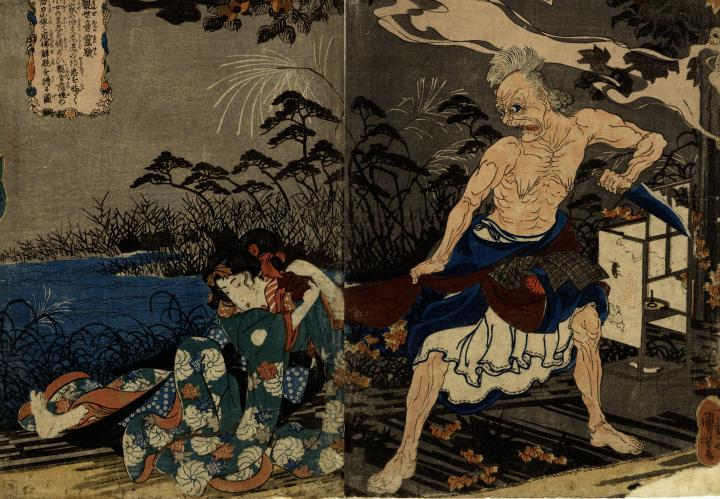

娘の帯を引っ張る鬼婆。上半身がはだけ、裾を絡げて左手に包丁を持つ。白い頭髪は逆立ち、目を見開き食いしばりながら娘を睨めつけている。
著作者：一勇齋國芳／出典：親書誌：U426_nichibunken_0267：觀世音靈驗一ツ家の旧㕝；カンゼオンノレイケンヒトツヤノフルコト／日付：2014／資源識別子：U426_nichibunken_0267_0001_0000
Copyright (c)2010- International Research Center for Japanese Studies, Kyoto, Japan. All rights reserved.